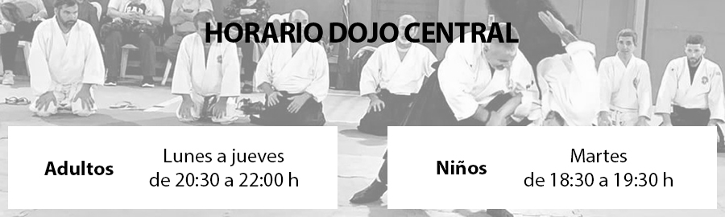

Línea de trabajo ASAK
Aiki Taiso
Ejercicios para sentir y proyectar ki (energía)
Las técnicas se dividen en dos grupos:
Katame waza - técnica de control:
- Ikkyo
- Nikyo
- Sankyo
- Yonkyo
- Gokyo
Nage waza - técnica de proyección:
- Shigo nage
- Irimi nage
- Kote gaeshi
- Kaiten nage
- Tenchi nage
- Koshi nage
- Kokyu nage
Atemis (golpes)
- Shudan tsuki
- Menuchi
- Yokomen uchi
- Gyaku yokomen uchi
Agarres
- Katate dori
- Kata dori
- Sode dori
- Ai hanmi katate dori
- Ryote dori
- Eri dori
- Morote dori (Ryote mochi)
Agarres por atrás (ushiro)
- Ushiro eri dori
- Ushiro tekubi dori
- Ryo kata dori
- Ushiro kubi dori
Variante de técnicas de inmovilización
Variante de técnicas de proyección
- Aiki otoshi
- Jujigarame
- Kokyu nage
- Koshi nage
- Kubi nage
- Ude kimi nage
- Sumi otoshi
Ukemis (caídas)
- Mae ukemi
- Ushiro ukemi
- Yoko ukemi
Buki (armas)
Aiki / Ken / Jo / Tanto / Tambo
Ken - espada de madera
- Sichi (7) suburi
- Go (5) kumi tachi
- Sichi (7) ken awaze
- Suburi en distintas direcciones + tanren uchi
Jo - bastón
- 20 suburi de jo
- Roku no jo (6)
- Hashi no jo (8)
- Ju san jo (13)
- San ju ichi jo (31)
- Hashi (7) awaze
- Go (5) kumi jo